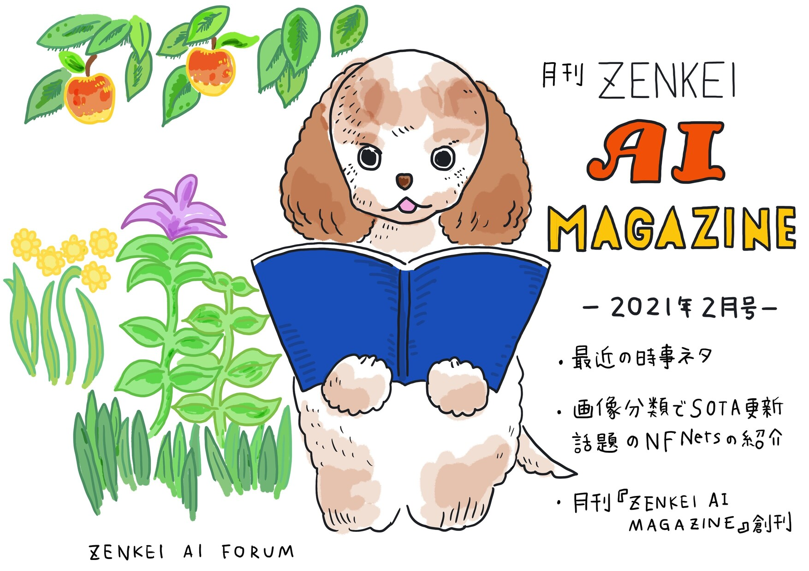

ZENKEI AI FORUM の発行する雑誌 ZENKEI AI MAGAZINE (ZAM) 通称「ザム」
2021年1月創刊の『月刊 ZAM』と 2021年7月創刊の『ZAM 季報』
ZENKAI AI FORUM の雑誌
ZENKEI AI FORUM の雑誌を編集する ZAM 編集部。
「人はたのしそうなイベントに集まる。
思考やアイデアはおもしろそうな雑誌の周りに集まる。
楽しそうなイベントが ZAF で、おもしろそうな雑誌が ZAM である」
という思いのもと、
現在、毎月のイベント「ZENKEI AI FORUM」の内容をまとめた『月刊 ZAM』と、
それらをまとめたものに、メンバーによる書き下ろしコンテンツを加えた
『ZAM 季報』を刊行しています。
月刊 ZAM 2021年1月号（創刊号）
2021/01/27 開催の ZENKEI AI FORUM の内容をベースにした雑誌『月刊 ZAM 2021年1月号』です。記念すべき『月刊 ZAM』創刊号。
ZENKEI AI FORUM の雑誌（リスト）
（残りの雑誌のリスト）

2021/02/24 開催の ZENKEI AI FORUM の内容をベースにした雑誌『月刊 ZAM 2021年2月号』です。
ページ数（本文）: ３２
目次：
まえがき
第１章当日のイベントの模様
第２章はじめに
第３章AI 最近の話題から
第４章『月刊ZENKEI AI MAGAZINE』創刊
編集後記
Get Started
 2021/03/31 開催の ZENKEI AI FORUM の内容をベースにした雑誌『月刊 ZAM 2021年3月号』です。
2021/03/31 開催の ZENKEI AI FORUM の内容をベースにした雑誌『月刊 ZAM 2021年3月号』です。
ページ数（本文）: ３２
目次：
まえがき
第１章当日のイベントの模様
第２章はじめに
第３章コンピュータ会話教室（市來健吾）
第４章東海道５Ｘ（ホンダナオ）
第５章東海道五十X プロジェクト（大島圭祐）
執筆者紹介
編集後記